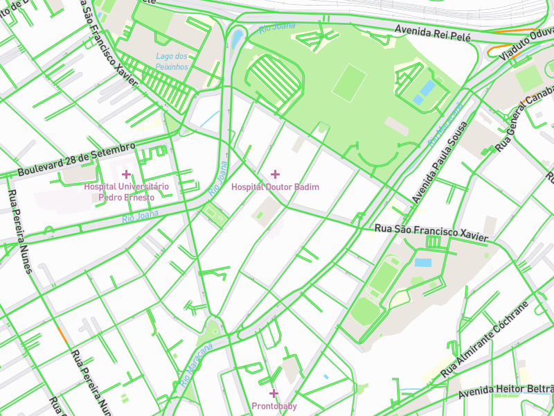

Rastreamento UrbanLink
Sua entrega, no caminho certo.
Digite o código do pedido para acompanhar as atualizações do trajeto.
Experimente o código de demonstração
Pedido UL-4829-1750
OrigemCentro de distribuição UrbanLinkMaracanã, Rio de Janeiro
DestinoRua São Francisco Xavier, 417Maracanã, Rio de Janeiro
Status atualEm rota de entrega
A caminho
Trajeto ilustrativo
Acompanhe as etapas
Atualizações do pedido
- Pedido recebidoHoje, 09:12 · O pedido foi registrado.
- Preparado para envioHoje, 10:05 · O pacote saiu do centro de distribuição.
- Em rota de entregaHoje, 11:24 · O entregador está a caminho do destino.
- Entrega concluídaA confirmação aparecerá aqui.
O caminho começa com um código.
Use o campo acima para visualizar uma demonstração de rastreamento.
Prévia demonstrativa: o rastreamento não está conectado a uma transportadora ou serviço de localização.